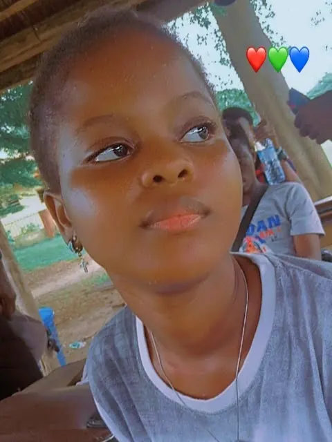
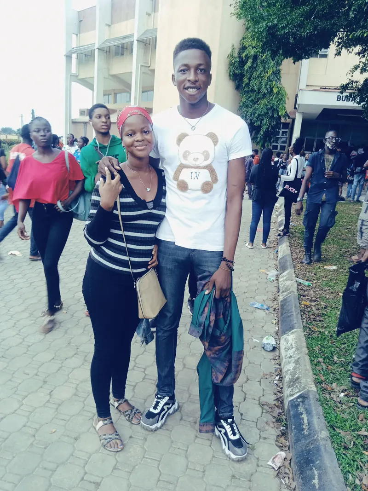
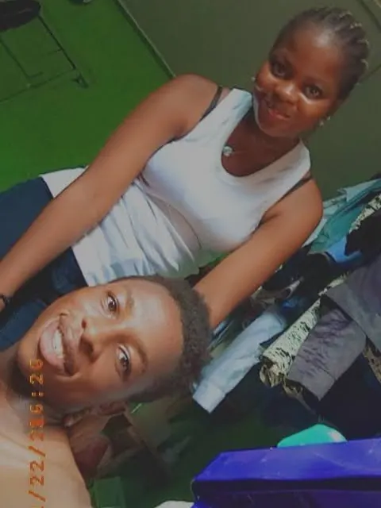
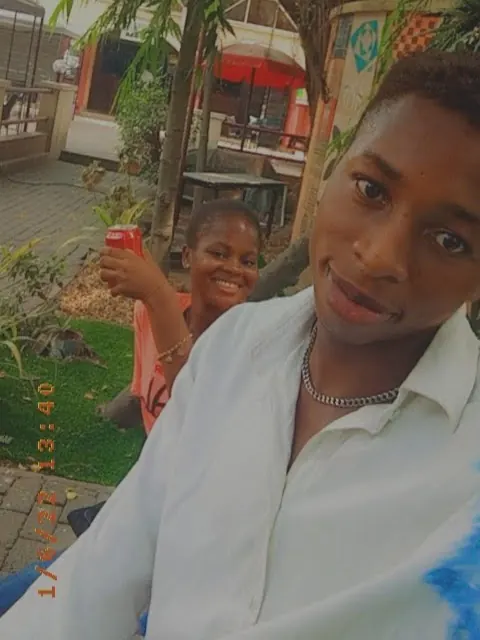
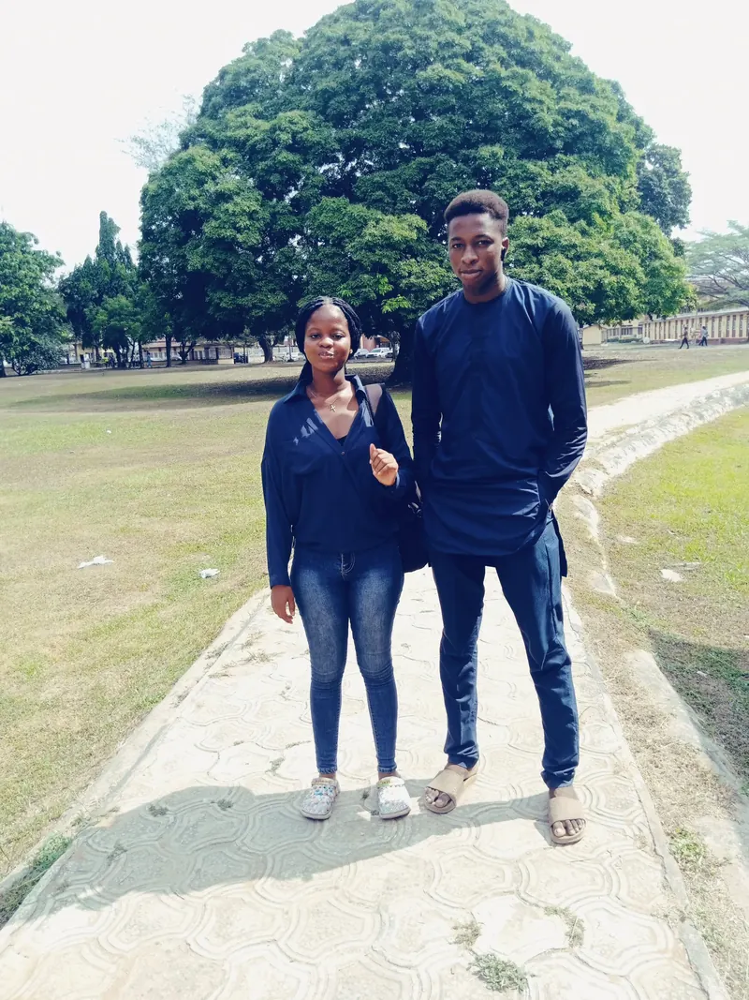
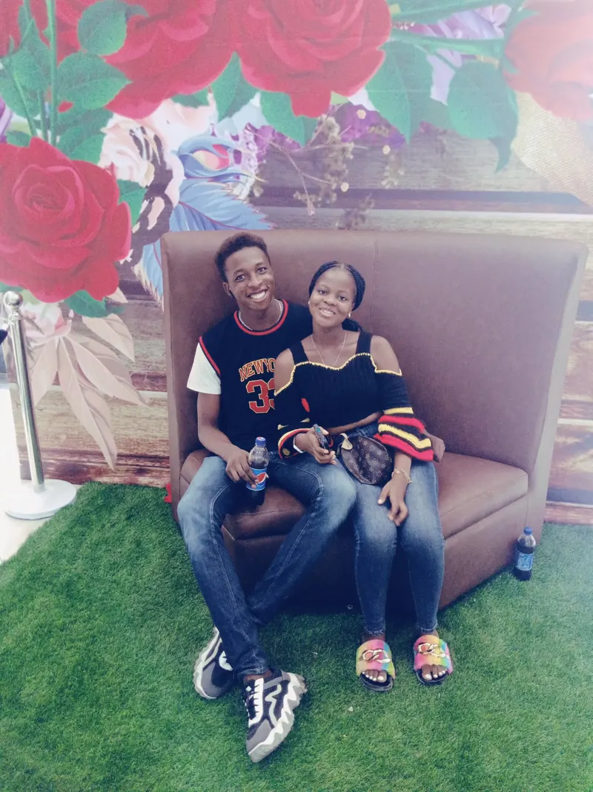
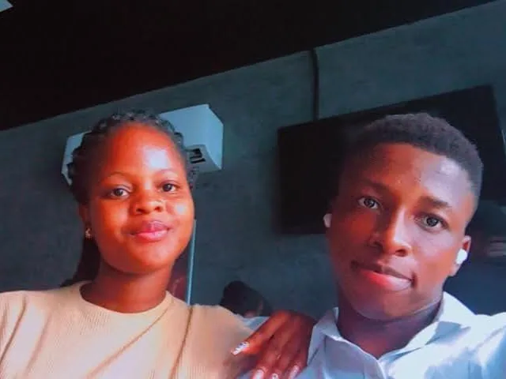

Every sunrise starts with a first light. This is ours.
↓

Exhibit A: the sneaky one
Receipt No. 001
ItemOne stolen photo
PricePriceless
StatusNever deleted
We were still getting to know each other, and you looked so pretty that my hands made the decision before my brain could. You never noticed. I committed the crime, I kept the evidence, and I would do it all over again.

Practising being a couple (unofficially)
Receipt No. 002
ItemOur first photo together
VenueThe university auditorium
NoteOne week before I asked
A school event, a crowd of strangers, and one small moment that belonged only to us. Look at that bear on my shirt; even he knew what was coming. About a week later, I finally found the courage to ask you to be mine.
Matriculating twice for love
Receipt No. 003
ItemOne matric gown
NeededTechnically, no
WornAnyway
You had already said yes by then. It was your matriculation, and I had done mine already, but I put on a gown anyway because I was not about to let you walk into that milestone without me. You held your tiny fan like a queen; I held on to you and grinned like I had personally graduated.

My heart, hanging right there
Receipt No. 004
ItemOne heart-bead necklace
PriceMy whole heart
StatusStill worn, everywhere
A little chain, tucked inside a big bead shaped like a heart. I gave it to you as my heart, and you wore it to show the world. Look closely at this photo from a friend's place; there it is, resting against you, exactly where I meant it to be. You have worn it ever since, and every time I see it, I remember I did something right.

Cheers to a new year, and to us
Receipt No. 005
ItemOne brand-new year
VenueFreedom Park, Lagos
DateAround 6 January
Our first outing together, just after the new year began. We went out to celebrate it: a new year, and quietly, a new year of us. I took the selfie; you hid behind a red drink raised like a toast, grinning as if the whole year had been your idea. It was a very good year to start.

Telepathy, but make it fashion
Receipt No. 006
ItemTwo outfits, one colour
PlanningNone whatsoever
MethodPure telepathy
A random day at school, with no texts, no plans and no "wear blue" memo. We simply turned up in the same navy, under the biggest tree in sight, like a colour show nobody had scheduled. Some couples need a group chat to coordinate; we apparently only needed vibes.

Roses, red accents, same code
Receipt No. 007
ItemTwo tickets, one Valentine
FilmMarry Me (2022)
Dress codeBlack and red
Our first Valentine's together, and yes, we tried to match again: black with a splash of red, in front of a wall of roses that looked like it was paid to be romantic. The movie was Marry Me, fresh out that February, starring Jennifer Lopez and some guy. I could not tell you his name; I was busy sitting next to you.
For the museum of space
Receipt No. 008
ItemOne look, held
VenueA celebration of life
CuratorThe universe, much later
We wore the same ankara to celebrate the life of a friend's grandmother, and somewhere in the middle of it, the camera caught us looking at each other. Monochrome, up close, a sharp glint in both our eyes and a huge smile on both our faces: love, admiration and everything in between. Long after the last human is gone, I imagine this hanging in a museum somewhere in space, next to a Basquiat, with a small plaque: "Proof that people once loved like this."
Our first concert: sound on
Receipt No. 009
ItemOne concert, two fans
ArtistDavido, her favourite
VolumeFully on
Our first concert together, and the artist was your favourite, Davido. I am sure the music was great, but the real show was you. This quick clip is us in the crowd with the lights flickering over our faces, and look at your neck: that heart necklace, right there at your favourite artist's show. Tap play, turn it up, and imagine the rest.

Operation: keep her busy
Receipt No. 010
ItemOne pizza, one ice cream
Hidden itemOne surprise party
AccomplicesAll her friends
Our first birthdays together; yours lands four days after mine, in the same August, so we get the whole month. I took you out for pizza and ice cream with a very straight face and a very secret plan. While we ate, your friends were turning your hostel room into a party, with cakes, gifts and a Happy Birthday banner. We walked back into a dark room, you flipped the light switch, and a room full of people shouted "Surprise!" I will remember your face for the rest of my life.
Priceless (no further questions)
Receipt No. 011
ItemOne laugh
PricePriceless
PhotographerMe, walking towards you
No occasion, no outfit, no plan. Just a random day, me walking towards you, and you already laughing before I got close. I took this photo knowing it would be one of the most valuable things I would ever own. It is my book, so I decide what goes in it, and this one goes last, on purpose. Whenever I need to remember why I love you, I only need to look at this: one person laughing, simply because the other one showed up.